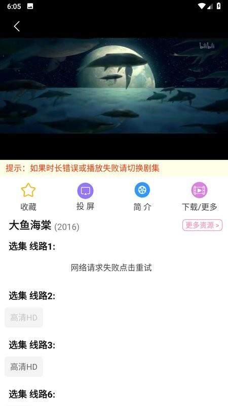

Hanime 快问快答：一款影视聚合应用的七件必知
Hanime 是什么、适合谁用、分类筛选怎么玩、弱网下卡不卡、投屏为什么断、装完要注意什么——七个高频问题一次答清。
整理一篇关于 Hanime 的快问快答，把选片、网络、投屏、安全几个高频坑一次捋顺。
Hanime 到底是什么？一句话能说清吗？
Hanime 是一款影视聚合类应用，它的官网上把电影、电视剧、综艺、动漫、纪录片这些内容集中到一个界面里，按题材、地区、年代几个维度拆开让你挑。它的核心卖点在分类筛选和弱网适配两块——筛选维度够细，播放对网络波动的容忍度也不错。
哪些人适合装？
经常在通勤或弱网环境下看片的人优先考虑。智能适配网络、自动降级画质的设计就是为这场景准备的。家里 WiFi 看片偶尔也用得上，投屏和离线缓存这两块做得中规中矩。反过来，追求极致画质体验的用户可能会觉得自动降画质太保守，手动干预的空间有限。
分类页的五维筛选怎么用才不筛空？
先粗后细。形式和地区这两个维度先框定大范围，看结果数量再决定要不要加类型或年代。五维全拉满很容易一条不剩，出现空结果时优先减掉年代这个维度——它是收窄范围最快的条件。配合排序一起用，比如筛选完再按评分排，是找口碑片最快的组合。想深挖组合技巧和自定义标签的玩法，Hanime文档里有完整的实操指南。
弱网环境下卡了怎么办？
先别慌，自动降画质是正常行为不是故障。应用在弱网下会切到流畅画质保证不中断，这是按设计降级。真卡得看不了，三个动作：换个 WiFi 试试、关掉 P2P 模式（会产生上传流量）、实在不行用离线缓存把片下好再看。日常推荐 WiFi 批量下载、流量在线兜底、弱网播放本地缓存这套三段式组合，能避掉大部分网络类问题。
投屏搜不到设备或连上就断，怎么快速排查？
搜不到九成是网络问题。手机和电视必须连同一路由器，访客 WiFi 开了客户端隔离基本就互相看不见，换回主网络就好。连上就断先查信号——离路由器近一点，再降个清晰度到 1080P 试试。如果还是不稳，接受兼容性现状，换离线缓存加外接播放是最稳的退路。
装完应用要注意什么安全细节？
三条底线别碰。安装包从官方下载拿，破解版和修改版直接远离。权限按需给，通讯录、短信、通话这些播放应用根本用不到，索要就拒绝。公共 WiFi 下别登录账号，密码也别和其他重要账号复用。观看历史会同步到云端，在意隐私的用户可以定期清理。

和同类聚合应用比，Hanime 的优势在哪？
筛选维度是它最突出的地方——形式、地区、类型、年代、特色五组胶囊标签横向滑动，组合起来比同类应用细不少。网络适配的三段式设计（WiFi 下载 + 流量在线 + 弱网离线）也是实测下来比较省心的一套。劣势在于投屏兼容性一般，部分电视型号容易断连，官方也没给出根治方案。
最后值不值得装？
值得。如果你有通勤看片或弱网环境的实际需求，Hanime 的筛选和网络适配能省不少事，装一个试试没坏处。整理这篇快问快答时参考了仓库里的资料，GitHub、Gitee、GitCode 都有这份文档的副本。